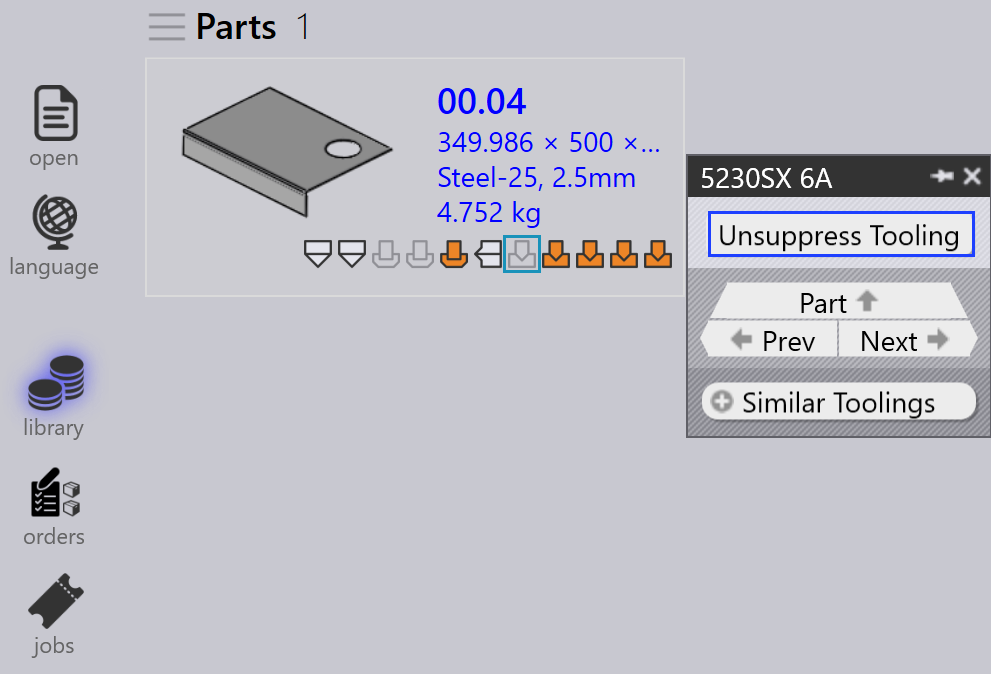

Panel nástrojového vybavení
Tato sekce vysvětluje akce související s nástrojovým vybavením, jako jsou Exportovat výstupy, Check Tooling, Potlačit nastrojování, Nastavit jako základní plochu…, Kopírovat nastrojování… a další možnosti používané pro správu instancí nástrojového vybavení.

|
|


Exportovat výstupy
Tato možnost exportuje výstup dílu do cíle nakonfigurovaného v Tovární nastavení. (Viz Bend Settings a Cut Settings)

Exportována jsou pouze nástrojová vybavení spojená s vybranou operací nástrojového vybavení, ne celý díl.
| Exportované soubory závisí na typu operace. Pro operace Bend a Fold jsou generovány NC soubory a reporty. Pro operace Cut a Punch jsou exportovány pouze soubory dílů. |
Check Tooling
-
Pokud dojde ke změně CAM nastavení nebo je ztracen ohýbací nástroj, nemusíte znovu nástrojovat díl.
-
Místo toho použijte Check Tooling k validaci existujícího nástrojového vybavení bez provádění jakýchkoli změn.
-
Pokud validace selže, stav nástrojového vybavení této instance je aktualizován a související výstupní soubory jsou odstraněny.
-
Check Tooling také detekuje díly, kde byly chyby dříve ručně přepsány pomocí Ignorovat chyby, a v případě potřeby aktualizuje jejich stav na chybu.

Kopírovat nastrojování…
Kopírování nástrojového vybavení umožňuje rychle aplikovat ohýbací nástrojové vybavení z jednoho řešení na další, čímž šetří čas a úsilí.
Tím se zkopíruje nastavení razníku, sekvence a zadního dorazu z vybraného referenčního nástrojového vybavení (řešení) a pokusí se aplikovat stejné nastavení na všechna další řešení.
-
Pokud je zkopírované nastavení proveditelné pro cílový stroj, je uloženo a použito.
-
Pokud nastavení není proveditelné, původní nástrojové vybavení pro tento stroj zůstává nezměněno.
Například můžete mít různá nástrojová vybavení pro různé stroje:
-
Zde stroj 5230SX 6A používá razník Gooseneck, stroj 5085X 6A B23 používá razník Pointed.

Když použijete Kopírovat nastrojování… na stroji 5230SX 6A, pokusí se zkopírovat nastavení Gooseneck na všechny ostatní stroje.

Stejné nastavení razníku, sekvence a zadního dorazu je aplikováno všude, kde je to možné. Pokud zkopírované nastavení nelze použít, původní nástrojové vybavení zůstává nezměněno.

Po aplikaci kopírování nástrojového vybavení bylo nastavení Gooseneck úspěšně aplikováno na všechny ostatní stroje, kde je to proveditelné.
Nastavit jako základní plochu…
Funkce Nastavit jako základní plochu… definuje, které ohýbací nebo skládací nástrojové vybavení je použito jako referenční plocha pro generování řezacích řešení. Když je nástrojové vybavení označeno jako Base-Flat, TruSmartCAM aktualizuje plochu dílu na základě tohoto stroje a podle toho znovu vygeneruje řezací řešení. Nástrojová vybavení Base-Flat jsou v UI zobrazena s modrým okrajem.
Různé ohýbací stroje mohou vytvářet mírné variace v ploše pro stejný díl. Když nastavíte nástrojové vybavení jako Base-Flat, TruSmartCAM použije plochu tohoto stroje jako hlavní referenci a automaticky přepočítá řezací řešení.
Zde můžeme vidět různé plochy pro stejný díl napříč různými stroji:

V tomto příkladu je nástrojové vybavení 5130X 6A B23 nastaveno jako Base-Flat a aktualizovaná plocha je aplikována ve vlastnostech dílu:

Automatický výběr základní plochy
Když je povoleno tovarní nastavení Aplikovat korekci plochy během procesu ohýbání:

-
TruSmartCAM automaticky nastaví ohýbací nástrojové vybavení (které obsahuje tabulku maximální délky ohybu) jako Base-Flat během importu dílu.
-
Pokud vybrané ohýbací nástrojové vybavení narazí na chybu nebo není proveditelné, TruSmartCAM inteligentně přepne a nastaví další platné ohýbací nástrojové vybavení jako Base-Flat. To zajišťuje, že reference plochy a řezací řešení vždy zůstávají konzistentní a platné bez ručního zásahu.
Vylepšená správa základní plochy
TruSmartCAM poskytuje možnosti Base-Flat v dialogu Uložit do Praxis při ukládání úprav ohýbacího nebo skládacího nástrojového vybavení. Tyto možnosti se zobrazují pouze pro nástrojová vybavení ve stavu OK a zajišťují, že plocha a řezací řešení zůstávají přesné.
Nastavit jako základní plochu a kalkulovat řešení řezání
Tato možnost se používá k označení nástrojového vybavení jako Base-Flat poprvé a automatickému vygenerování odpovídajícího řezacího řešení.
Zobrazuje se když:
-
Nástrojové vybavení není aktuálně označeno jako Base-Flat.
-
Uživatel si nástrojové vybavení rezervoval pro úpravy a ukládá změny.

Pro použití této možnosti si rezervujte ohýbací nebo skládací nástrojové vybavení a proveďte požadované úpravy, jako jsou změny parametrů ohybu nebo plochy. Stiskněte Ctrl+S pro uložení změn. V dialogu Uložit do Praxis vyberte Nastavit jako základní plochu a kalkulovat řešení řezání a klikněte na OK. TruSmartCAM nastaví nástrojové vybavení jako Base-Flat a vygeneruje řezací řešení s použitím aktualizované plochy.
Aktualizovat základní plochu a znovu kalkulovat řešení řezání
Tato možnost se používá, když je nástrojové vybavení již označeno jako Base-Flat a bylo upraveno, což vyžaduje opětovné vygenerování plochy a řezacích řešení.
Zobrazuje se když:
-
Nástrojové vybavení je již označeno jako Base-Flat.
-
Uživatel si jej rezervoval, upravil a ukládá změny.

Při úpravě existujícího nástrojového vybavení Base-Flat aktualizujte parametry ohybu nebo geometrii plochy podle potřeby. V dialogu Uložit do Praxis vyberte Aktualizovat základní plochu a znovu kalkulovat řešení řezání. TruSmartCAM poté aktualizuje nástrojové vybavení Base-Flat a znovu vygeneruje všechna související řezací řešení tak, aby odrážela nejnovější změny.
|
Pouze jedno ohýbací nástrojové vybavení může být nastaveno jako Base-Flat najednou. Když je Base-Flat změněn, existující řezací řešení jsou automaticky znovu zpracována. Tato funkce je dostupná pro ohýbací i skládací nástrojová vybavení v TruSmartCAM. |
Obnovit nástroj…
Tato možnost znovu zpracuje vybrané nástrojové vybavení pro díl.
Klikněte pravým tlačítkem na požadované nástrojové vybavení v panelu nástrojového vybavení a klikněte na Obnovit nástroj…

Před pokračováním se zobrazí potvrzovací dialog.

Klikněte na Ano pro pokračování v opětovném nástrojování nebo na Ne pro zrušení operace.
Znovu nástrojováno je pouze vybrané nástrojové vybavení. Ostatní nástrojová vybavení spojená s dílem nejsou ovlivněna. Existující výstupy související s vybraným nástrojovým vybavením jsou odstraněny a znovu vygenerovány během procesu opětovného nástrojování.
Tuto možnost použijte, když jsou data nástrojového vybavení zastaralá, nesprávná nebo když jsou provedeny změny konfigurace stroje nebo nástrojového vybavení.
Ignorovat chyby
-
Pokud nástrojovaná instance zobrazuje varování a přesto s ní chcete pokračovat, můžete varování přepsat kliknutím na Ignorovat chyby.

-
Tím umožníte systému exportovat výstupní soubory pro tuto instanci, i když došlo k problémům s nástrojovým vybavením.
| Použijte Ignore Errors pouze tehdy, když jste si jisti, že varování lze bezpečně ignorovat. Přepsání skutečných chyb může vést k poškození stroje nebo bezpečnostním rizikům. |
Potlačení/Zrušení potlačení nástrojového vybavení
-
Když je stroj neaktivní nebo nechcete, aby byl konkrétní díl zpracován určitým strojem, použijte Potlačit nastrojování k vyloučení tohoto dílu z rozmístění na tomto stroji.

-
Po potlačení přejetí myší nad nástrojovanou instancí zobrazí zprávu jako: "Tooling suppressed by <User name> on <Date Time>".
-
Potlačení nástrojového vybavení odstraní výstupní soubor pro tento stroj a díl.
-
Použijte Nepotlačit nastrojování k obnovení stavu nástrojového vybavení pro díl na tomto stroji.

-
Když je zrušeno potlačení, příslušný výstupní soubor je znovu vygenerován.